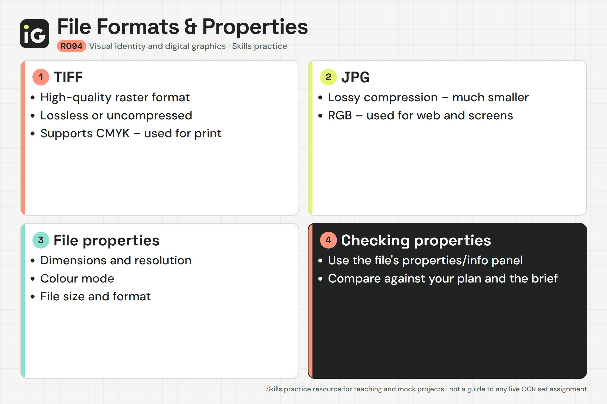

Skills practice resource. These guides support teaching and mock projects. They are not a guide to any live OCR set assignment. During your assessed NEA, follow only your teacher's instructions and the OCR set assignment.

Final Exports (TIFF / JPG) + Properties
Export final output files and evidence them properly.
Keep your Project Log updatedScreenshot as you workLink back to brief + audience
Final Exports
Choose suitable formats for print and screen, and evidence your export settings.
Screenshot export settings for both.
Screenshot the files saved in your project folder.
Screenshot file properties for TIFF and JPG and compare quality vs file size.
Project Log evidence:
Add screenshots and explain what you did and why.
Quick checks
Does this link back to the client brief?
Does this suit the target audience?
Have you taken screenshots during the process?
Is your work saved in a sensible, organised folder?
Common mistake:
Only showing the final outcome. Record your process and explain your decisions as you go.
What the Specification Says
Save and export
Use this checklist to make sure you can cover every part of this topic.
Save high-resolution proprietary master files as an archive for further edits
Export in file formats and image properties that meet client requirements